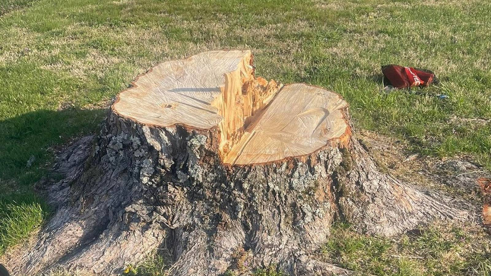
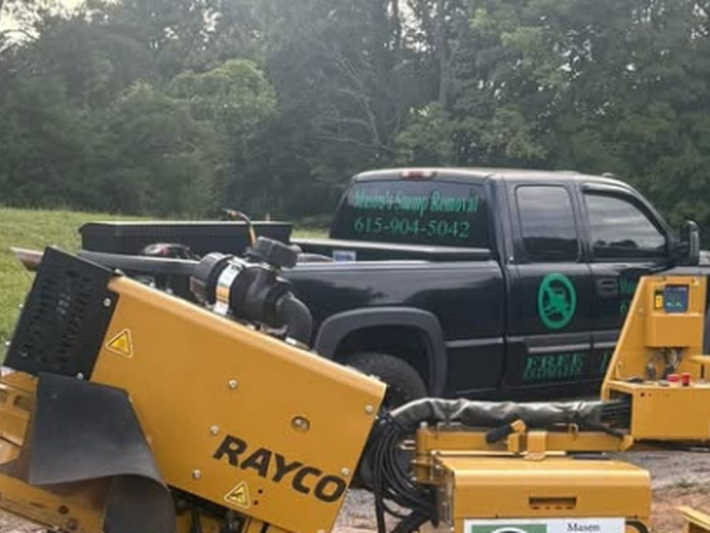
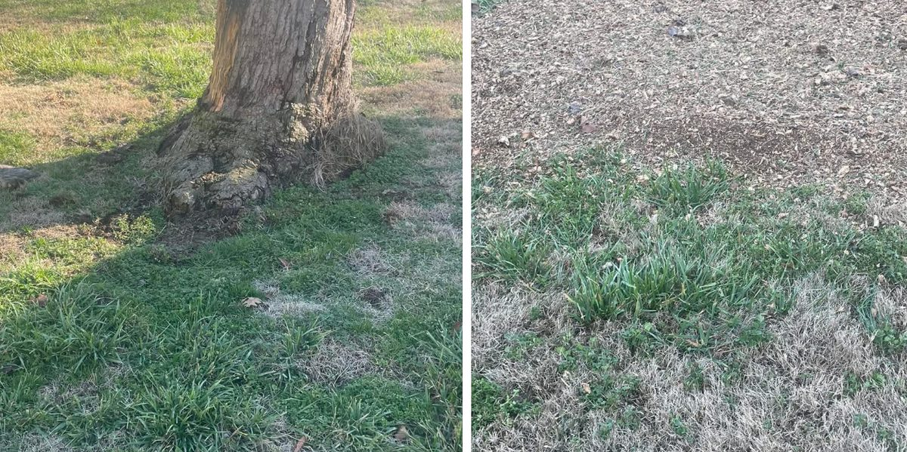
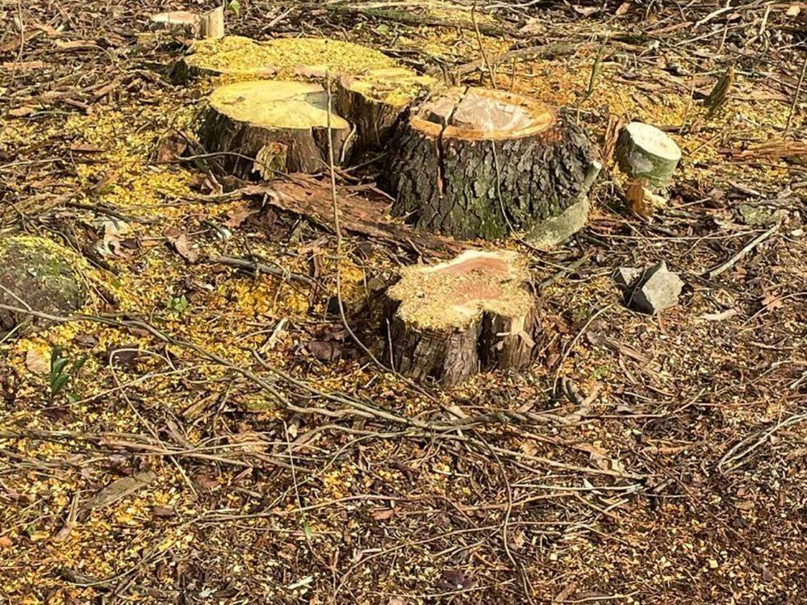
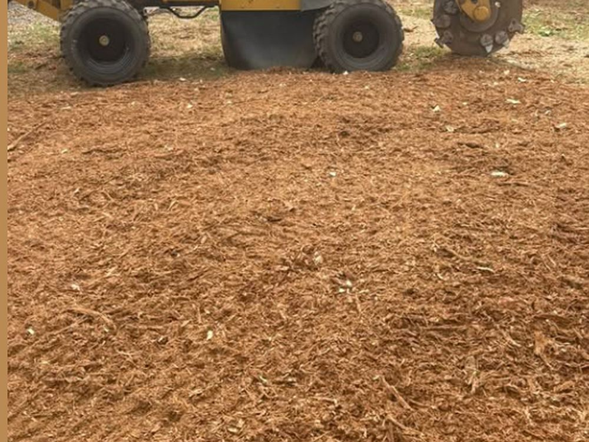
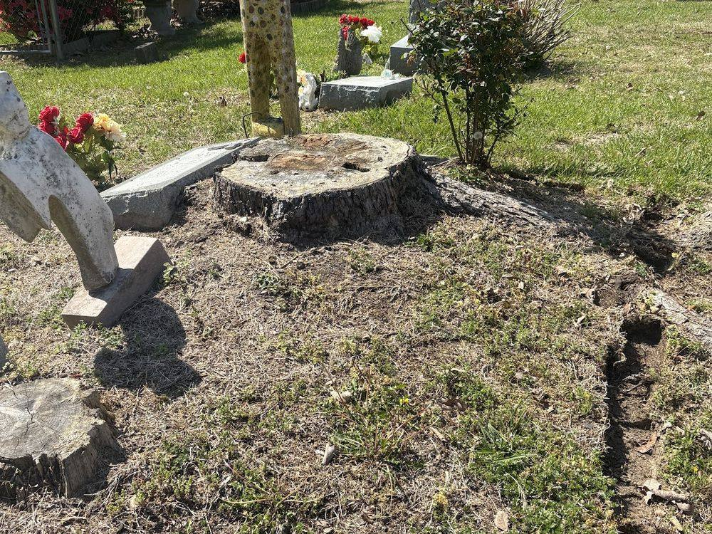
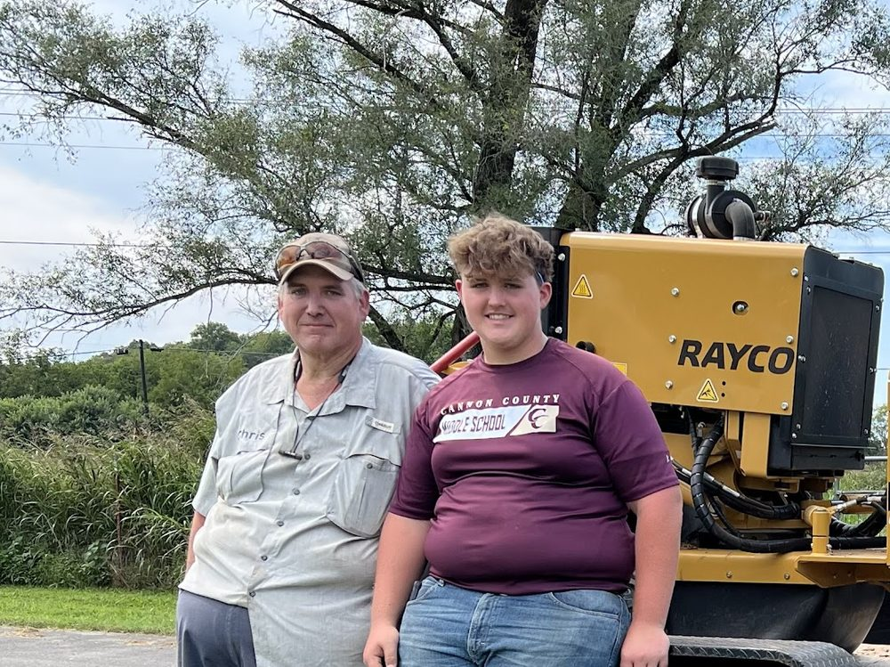

Single stump grinding
That one stubborn stump left after a tree came down — ground several inches below grade so you can sod over it, plant, or just stop tripping on it.

Mason's Stump Removal grinds tree stumps below grade across Woodbury and the Middle Tennessee countryside, then cleans up the grindings so you get your yard back.
No upselling, no tree-service add-ons you didn't ask for. Just stumps ground down and cleared away, whether it's the one left over from a removal or a whole fence line.
That one stubborn stump left after a tree came down — ground several inches below grade so you can sod over it, plant, or just stop tripping on it.
Cleared a row of trees or a whole lot? We handle high-volume jobs — including grinding 20 stumps in a single visit — and keep the price fair per stump.
We don't just shave the top. Stumps come out 4–6 inches below the surface so surface roots and regrowth aren't left waiting under your lawn.
The grindings don't stay in your yard unless you want them. We rake out the hole and haul off the wood chips — or leave the mulch behind if you can use it.
Stumps near headstones, flower beds, fences, or septic lines need a careful hand. We work the access-limited spots without tearing up everything around them.
Those raised roots running off the stump that catch the mower deck? We grind them down with the stump so the whole area mows flat again.

Thirty Google reviews, not one below five stars. People keep calling back — and sending their neighbors — because the job gets done quick, priced fair, and cleaned up.
Most stumps are a same-visit job. You're not waiting weeks for one stump to come out.
A free quote before any grinding starts — reviewers call the work "quick, inexpensive, and worked great."
The grindings get raked out and hauled off. We leave the spot ready for sod, soil, or seed.
Based right here off McMinnville Highway in Woodbury — a familiar truck in Cannon County, not an out-of-town crew.
Tell us how many stumps, roughly how big, and where they are. A photo or two helps.
We confirm access and give you a fair, up-front price per stump — no surprises later.
The grinder takes each stump down several inches under the surface, surface roots included.
We rake out the hole and haul off the chips — or leave the mulch if you want it. Yard's yours again.

A stump isn't just an eyesore — it's a spot you can't mow, plant, or build on. Ground out below grade, that same square footage goes back to being lawn.
Below-grade grinding clears the root crown so new grass and roots have room.
Hidden stumps and surface roots gone means a clean, flat pass with the mower.
Every photo here is from a real Mason's Stump Removal job around Woodbury and Cannon County.



"I had 20 stumps ground out from my yard after some tree removals, and the entire experience was outstanding."
"Chris is awesome! He has done two stump removals for us and both were quick, inexpensive, and worked great!"
Had us out for a stump? We'd be grateful if you shared a few words.
Based off McMinnville Highway in Woodbury, we cover Cannon County and the nearby towns. Not sure if you're in range? Give us a call — if it's a reasonable drive, we'll come look at it.

Mason's Stump Removal is a local stump grinding operation working out of Woodbury, Tennessee. We're not a big tree company that grinds stumps on the side — stumps are the whole job, so the equipment and the know-how are pointed right at getting them out clean.
From a single leftover stump to a yard full after a clearing, the goal's the same: grind it below grade, clean up the mess, and leave you ground you can actually use again. That's how thirty neighbors ended up leaving five-star reviews.
Grinding chews the stump down into chips, several inches below ground level, and leaves the deep roots to rot away naturally. It's faster, cheaper, and far less disruptive to your yard than digging the entire root ball out — which is why it's how most stumps get handled.
Standard is about 4–6 inches below grade — enough to clear the root crown so you can lay sod, plant grass, or put down topsoil. If you're planning to plant a new tree or build in that exact spot, let us know and we can go deeper.
Yes. We rake out the grindings and haul them off as part of the job, leaving the spot ready to use. If you'd rather keep the mulch for a bed or trail, just say so and we'll pile it where you want it.
Absolutely — high-volume jobs are some of our favorites. We've ground 20 stumps in a single visit, so a cleared lot or a long fence line is no problem, and the per-stump price gets better the more there are.
It depends on the size and number of stumps and how easy they are to reach. We give a free, up-front quote before any grinding starts, so you'll know the price first — reviewers consistently describe the work as inexpensive.
Woodbury and Cannon County first, plus surrounding Middle Tennessee towns like Auburntown, Bradyville, Readyville, Murfreesboro, Smithville and McMinnville. If you're nearby and not sure, call and ask.
Tell us what you're dealing with — one stump or a whole yard — and we'll give you a fair, up-front price. No obligation, no pressure.
The fastest way to get a price is a quick phone call — most quotes take just a couple of minutes.
Texting a photo of the stump helps us quote it faster.